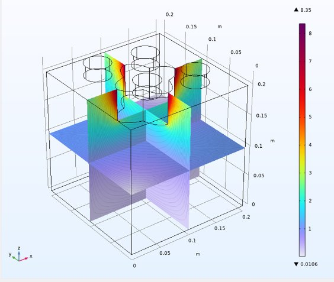

Sequential Logic Circuit Design
Designed, simulated, and physically implemented a sequential digital logic circuit using J-K flip-flops and a finite state machine to display a predefined numerical sequence on a 7-segment display.
I like figuring out how things work, then building them.
Email me See projects
I’m a third-year Engineering Physics student at McMaster University, also pursuing a minor in Nuclear Studies and Society: Nuclear Engineering.
I’ve always been curious about how things work, and I love finding creative ways to solve problems. Whether I’m designing circuits, exploring computational models, or learning something completely new, I enjoy the challenge of figuring things out and turning ideas into something meaningful.
One of my favourite things about engineering is that there’s always something new to discover. I love getting involved in projects, collaborating with others, and occasionally getting a little too invested in solving a problem!
When I’m not studying or working on engineering projects, you’ll probably find me with a book, out for a run, or planning my next adventure.
I enjoy running half-marathons, journalling, and getting completely absorbed in whatever project has caught my attention (like building this portfolio and website, haha!).
But one of my absolute favourite things is hiking, especially in the mountains. There’s something about being surrounded by mountains, exploring new trails, and spending time outdoors that I absolutely love.
Designed, simulated, and physically implemented a sequential digital logic circuit using J-K flip-flops and a finite state machine to display a predefined numerical sequence on a 7-segment display.

A team project simulating two electrical impedance tomography sensor configurations in COMSOL Multiphysics to investigate non-invasive tumour detection through electrical property variations in biological tissue. I built the cylindrical wearable sensor model.
Email your.email@mcmaster.ca · LinkedIn · GitHub